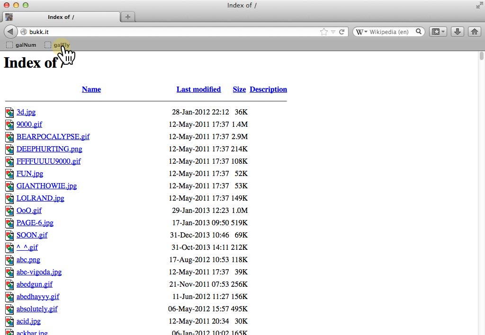

galFly Bookmarklet
galFly To “install” this bookmarklet, just drag the big link above to your Bookmarks Toolbat. Voilà!In some cases you just find a lot of links that point to images! No number progression to analyze, just the raw links there for us to partake. Classically you would have to open these links in new tabs one by one, but with galFly we can just create a gallery right where we are!
-
1
First, “install” the bookmarklet above. Now, when you serendipitously find an index or page with lots of links to images, click on galFly
 -
2
That's it! The gallery generates showing us 25 images at a time (in this case this setting is not modifiable, unless you change the code)
You can use galFly in any site that has links that point to images to get a gallery instantly.
Refer to Common Features to know more about navigation and zooming.